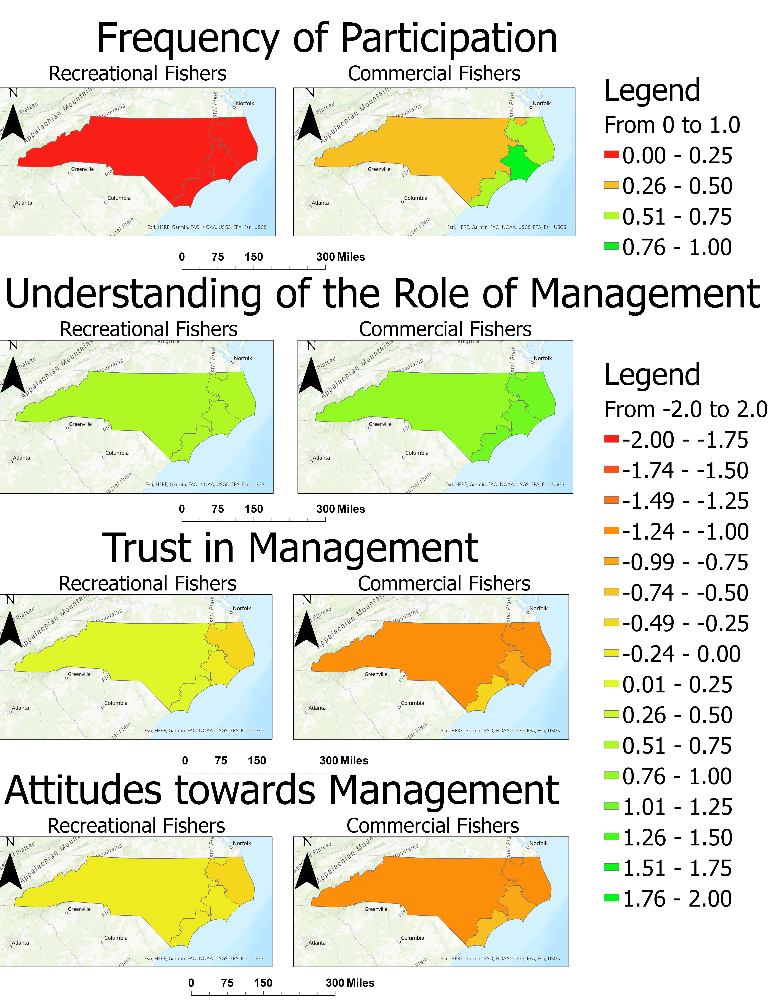

Sentiments of Fisherment Towards NC Fishieries Managment
Caleb Tyler
Using a survey of NC fishermen UNC a team of UNC and ECU researchers , opinions towards fishery managment were collected and displayed in the below maps.
The interactive data with more variables was also made available via ESRI's online mapping services(after signing in).
Interactive ESRI Web Map
